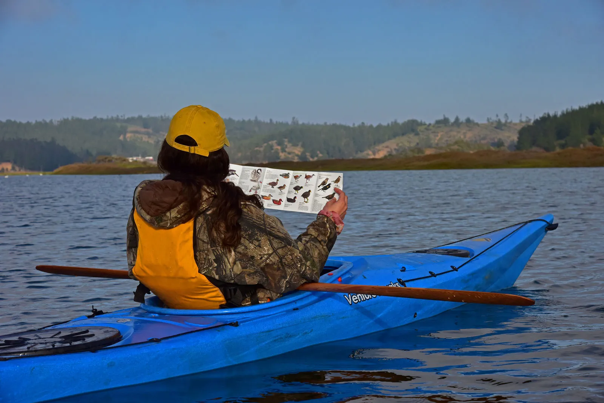
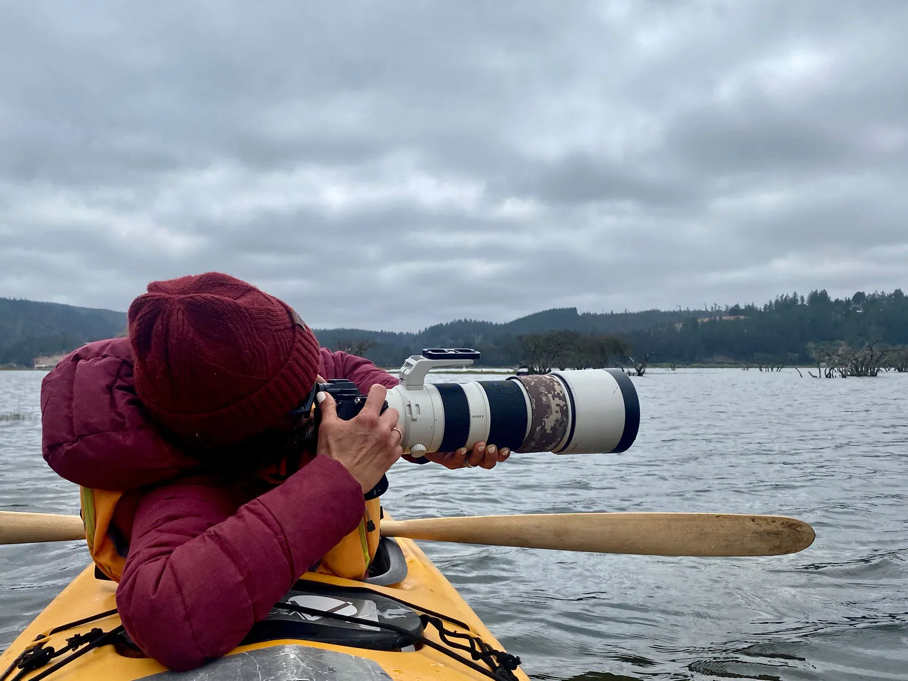
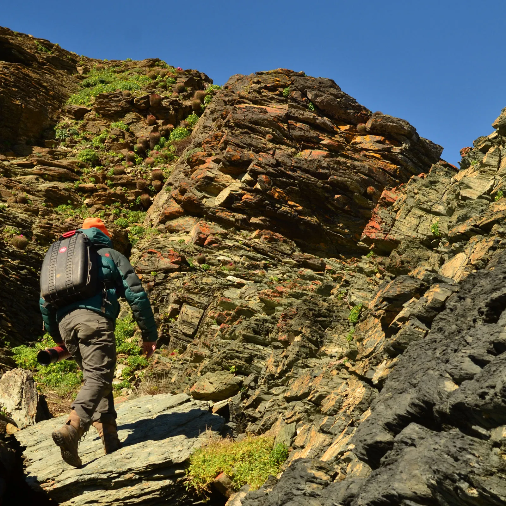
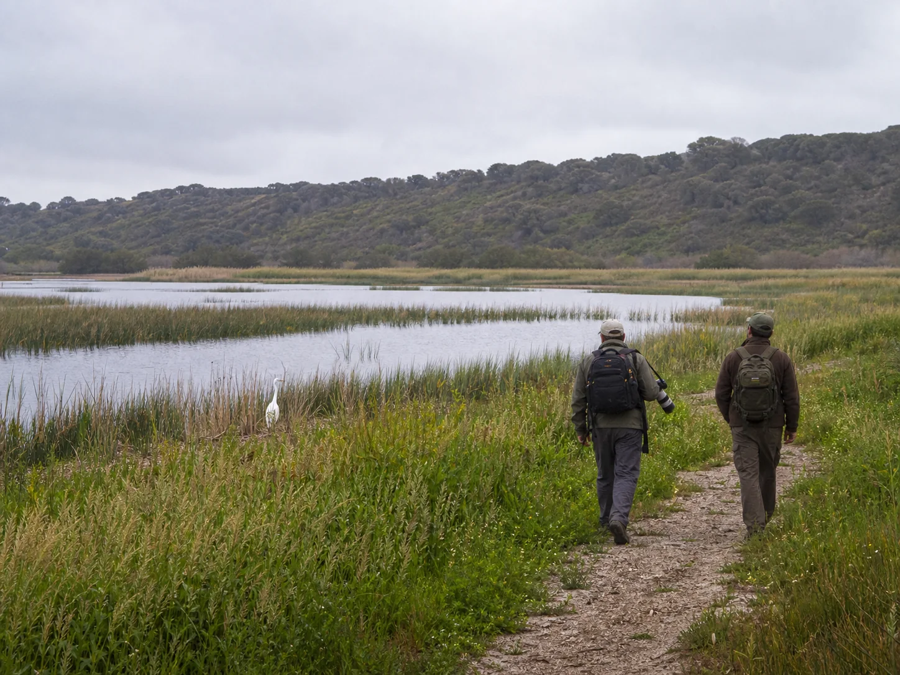
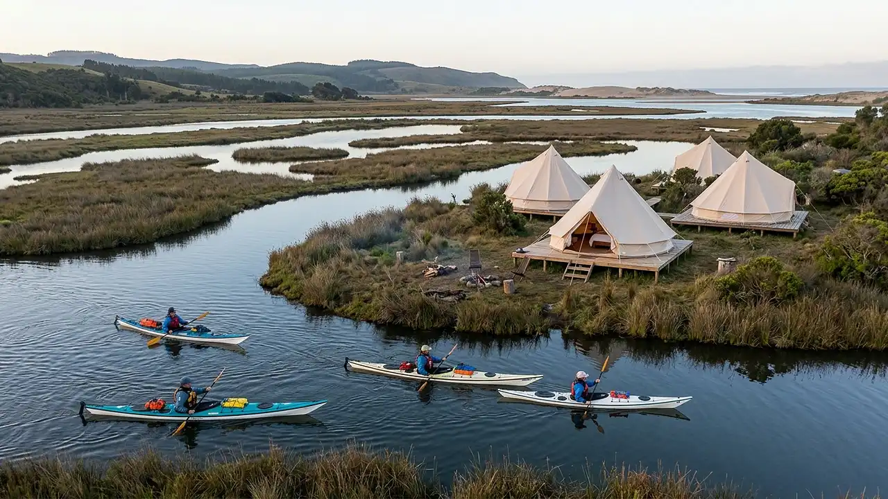
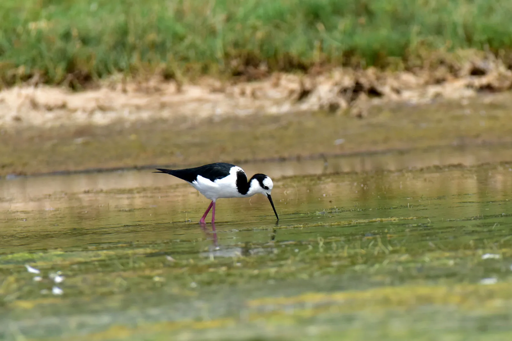
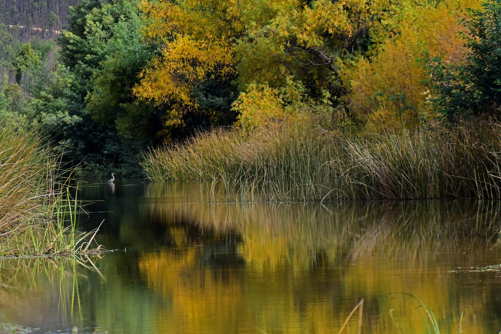
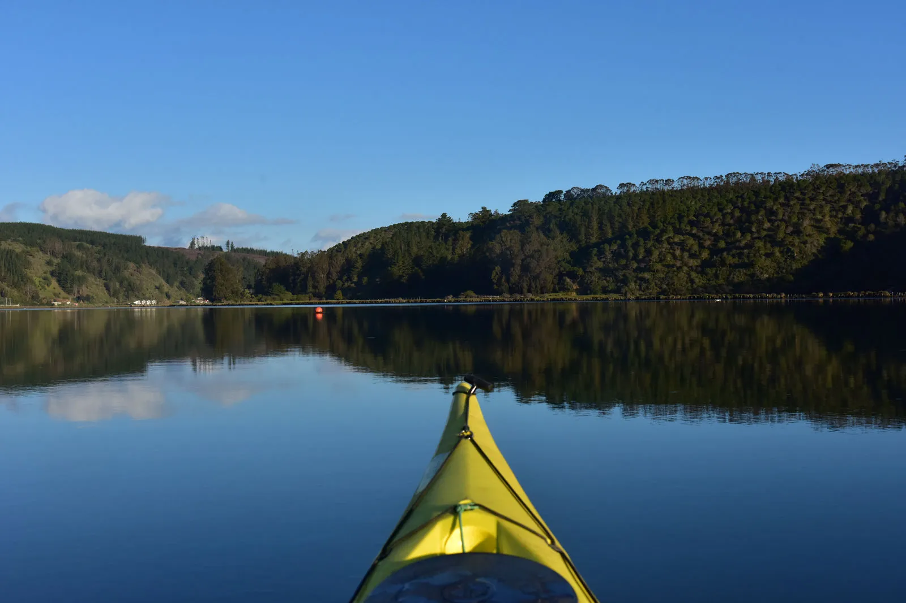
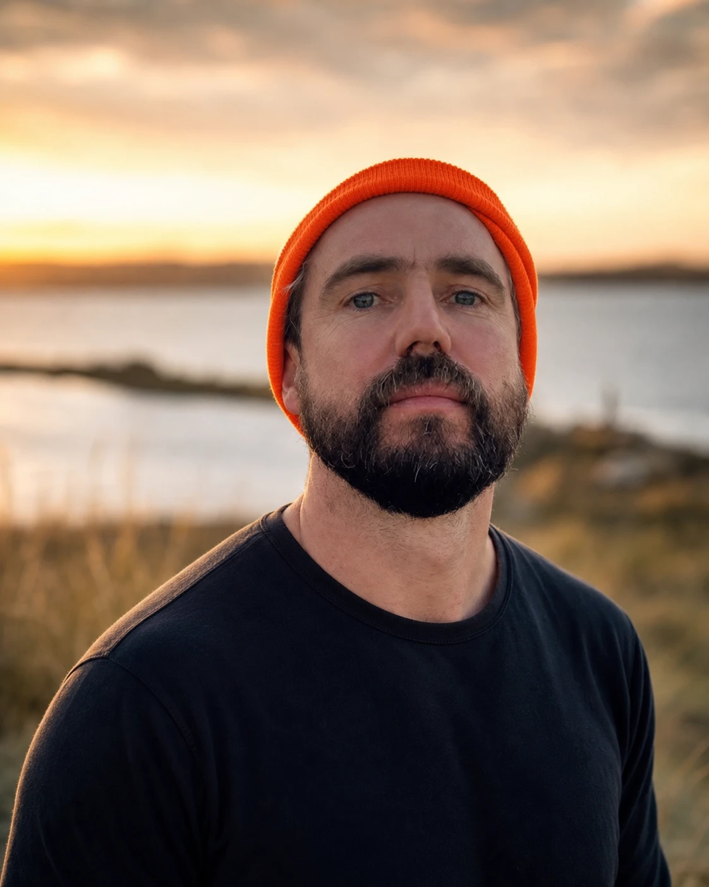
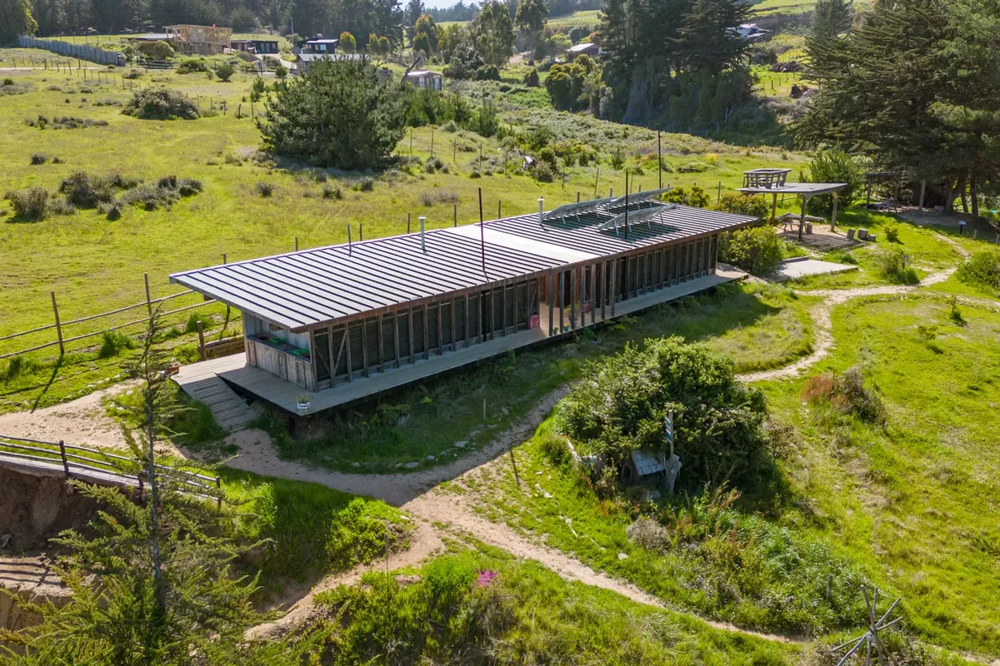

⏱ 3 h · 8 h
Kayak de travesía
Observación de aves en kayak
Explora en silencio el humedal de las aves sobre aguas tranquilas. Sin experiencia previa, apto para toda la familia.
Saber más →Explorando en silencio el humedal de las aves
Mejor equipo para una travesía inolvidable. Trabajamos con las mejores marcas para entregarte una experiencia única en medio de la naturaleza: remos de competición, tradicionales de carbono de la marca Werner y variedad de opciones en remos esquimales de madera. Kayaks single y dobles de las marcas Venture, Riot y de fibra de la marca M&G, salvavidas Kakotat, equipos de rescate NRS — marcas que aseguran el mejor rendimiento en cualquier condición de navegación.

⏱ 3 h · 8 hExplora en silencio el humedal de las aves sobre aguas tranquilas. Sin experiencia previa, apto para toda la familia.
Saber más →
⏱ 4.5 h · 7.5 hEl guía rema y te posiciona en los mejores rincones para que logres fotografías increíbles. Para profesionales y aficionados.
Saber más →
⏱ 2 h · 3 hDescubre a pie los paisajes y la maravillosa biodiversidad de la zona, por rutas seguras ideales para toda la familia.
Saber más →
⏱ 3 h · 8 hConoce los oficios de las comunidades locales: salinas, molino de agua y trabajo en arcilla del territorio.
Saber más →
Una noche bajo las estrellas en glamping junto al humedal. Dos días de naturaleza, aves y silencio, con alojamiento incluido.
Reservar →En nuestra agencia/tienda y tienda online encontrarás productos artesanales, equipo outdoor de las marcas Opinel, Stanley, Campante, entre otras, además de libros, guías de identificación de especies y mucho más.
Un tercio de las especies de aves de humedal presentes en Chile encuentra aquí su hogar.



Somos un equipo de personas apasionadas por la vida en la naturaleza, la fotografía y los deportes outdoor. Buscamos acercar a las personas a rincones naturales de gran valor, lugares que deben ser puestos en valor por todos con urgencia, ya que poseen una importancia vital para el equilibrio de los ecosistemas y la diversidad de especies, y que a su vez, en su estado puro, presentan condiciones ideales para el desarrollo económico de las comunidades.

Fundador & guía
Guía & tienda
Camping & expediciones
Calificado con 4,9 sobre 5 en Tripadvisor y en Google, por más de 30 viajeros que han vivido nuestras expediciones.
Mi pareja y yo tuvimos la mejor experiencia con Pablo. Su atención al detalle en el viaje en kayak fue increíble.
Este paseo es un imperdible si quieres conocer el humedal de Cahuil desde otra perspectiva.
Pablo fue fantástico y muy conocedor de la flora y la fauna. Nos explicó qué plantas eran comestibles y nos enseñó sobre las aves.
Hicimos un tour de kayak al atardecer en Cahuíl con Pablo y ¡fue increíble! Fue muy amable, realmente informativo sobre la naturaleza y la fauna del lugar.
¡Una experiencia buenísima con un guía muy amable que te cuenta mucho sobre la naturaleza chilena!
Ver todas las reseñas en Tripadvisor y Google

Te invitamos a conocer nuestro camping ecológico Olas de Chile Ecocamp: sitio autosustentable en Alto Punta de Lobos, con energía solar, bosque nativo y pet friendly, a minutos de la playa. Ideal para completar tu estadía junto a la naturaleza.
Descubrir el campingReserva tu expedición online o escríbenos por WhatsApp. Diseñamos cada travesía según tu ritmo y tus intereses.